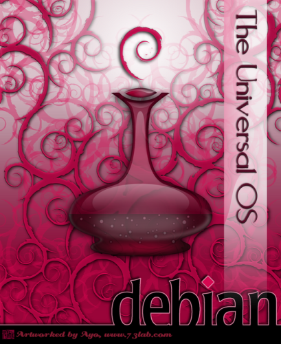
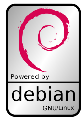
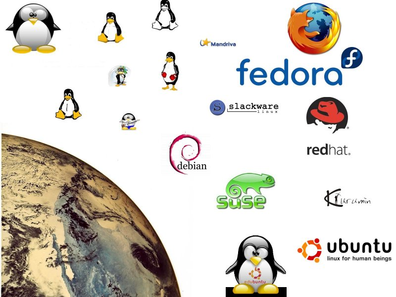
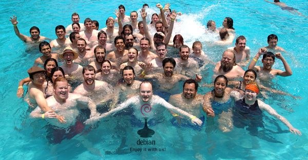

Packaging Perl modules
Packaging Perl modules
for Debian
Jozef
Why Debian?
- Test::More 'no_plan'; Test::Exception;
- isa_ok(Debian, 'Linux');
- ok(Debian->production);
- is(Debian, 'stable') or die;
- is_deeply(Debian->perl, [ 'friendly' ]);
- can_ok(Debian, qw{ customize });
- ok(Debian->maintenace < $AFFORDABLE);
- lives_ok(sub { Debian->without_maintenance } );
Lots of other choices

Better have one tux in your hand then...
in a crazy dream we can start to think of alternatives...
the butterfly looks so nice!
vs
Enough of joking
- Debian is "famous" for stability
- something vs something
- Debian is "famous" for old versions
- 2-3y release cycle - no version upgrades
- of course security upgrades (avail. 1y after next stable)
- very powerful (and usable) packaging
- apt-cache search perl
| grep -E '^lib([a-z0-9]+-)+perl '
| wc -l # = 1103
who takes care?
- Currently, the project includes more than a thousand developers. (Wikipedia)

COIN::Curator installation
7min?, 10min?, or? let's see...
- Curator Engine Debian install wiki
- $ apt-get install libcoin-curator-perl
- 0 upgraded, 165 newly installed, 0 to remove and 0 not upgraded.
- Need to get 153MB of archives.
- After unpacking 347MB of additional disk space will be used.
- 49 custom made packages
packaging of Pod::Spell
- apt-get install dh-make-perl dpkg-dev debhelper
- dh-make-perl --cpan Pod::Spell
- cd Pod-Spell-*
- debuild
- cd ..
- ls -la
- # et voilà
- # dirty but quick
dh-make-perl not perfect
- sometimes you need to resolve dependencies your self (Module::Install)
- if not packaged (or old versions) package them...
- need to set build dependencies
- fill changelog (?)
- sometimes fix version of the dependency
as some module authors have desynchronized - higher versions in sub files - debs without own custom repository is a pain
- apt-file can not find files of dependencies that are not in repository
=> dh-make-perl fails to resolve dependencies automatically
why own repository?
- easy installation
- let's have more!
- stable && testing && unstable
- related to me/my company
- developers - unstable
- staging - testing
- production - stable
own debian repository
- "just" a folder with some structure
any web server can host it (even IIS! ;) - folder served by HTTP and/or FTP
- apt-cache show reprepo
- Setting up your own APT repository with upload support
- reprepro include unstable libfilesys-diskusage-perl_0.04-1_i386.changes
benefits of packaging
- standard/homogenous naming - Module::Build => libmodule-build-perl
- synchronized module versions update (apt-get upgrade)
- easy revert back if something goes wrong
apt-get install libdbi-perl=1.53-1etch1 - apt-show-versions - compare two systems
- apt-file search - where is this file coming from?
- dpkg-reconfigure - ask interactive questions
- dpkg-divert - ability to change only minimum
- every package has a maintainer - know who to bother
bug report
- module versions (combination) in standard distribution (etch, lenny)
are tested. - if security bug found is it should be reported and will be fixed
- even in testing (lenny) the modules should work fine.
are already "tested" coming from unstable - if not
sudo apt-get install reportbug - reportbug /bin/bash || reportbug bash
useful "package" commands
- apt-cache (search|show)
- apt-get (install|remove|source|build-dep)
- apt-show-versions
- apt-file (update|search)
- dpkg-reconfigure
And that's it...
Questions?